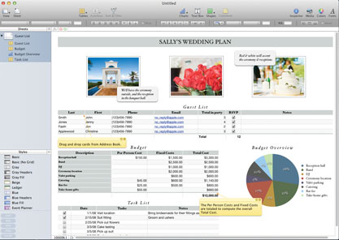

CALCULATION

With great-looking templates, easy-to-create formulas, and dynamic tables and charts, spreadsheets in Calculation make perfect sense. And on the MacBook Pro with Retina display, data is infinitely more impressive.
Cloud documents
All your spreadsheets. On all your devices.
With Cloud documents, you can create spreadsheets in Calculation on your Computer and access them on your iPad, iPhone, and iPod touch. And vice versa. You can edit them from anywhere — on any device you use. Changes you make to a spreadsheet on one device automatically happen on all your devices. So you always have the latest version of your work. And your spreadsheets all add up to easy.
Calculation, flexibility.
Plan a wedding. Save for retirement. Track your workouts. Keep a baby journal.
Spreadsheets can help you organize and plan, and great-looking Apple-designed templates will help you get started. With the Template Chooser, you can preview over 30 templates to use for home, work, and school. Tables are already made. Formulas have been figured out. Fonts are in place. They’re all ready to go. Just find something you like and make it your own.
Calculates beautifully.
Creating formulas may seem complex, but Calculation makes it uncomplicated.
Using the intuitive browser, you can choose from over 300. Tooltips and built-in help provide clear and concise explanations of each variable. The Formula List view shows you every calculation on your spreadsheet at once. And with a few clicks on the toolbar, you can create tables and charts and add images and graphics. Easily find fonts and format text styles in the format bar.
Intelligent tables
Calculation is a blank canvas for tables.
You can create as many as you want and resize them as needed. The layout of each table is independent, so whatever you do to one table won’t affect the others.
Move tables anywhere — even to a different sheet — and the calculations remain intact. You can also share content between tables. WIth intuitive tools,
Calculation helps you analyze data. Enter data and change values within the cells and use sliders, checkboxes, steppers, and pop-up lists to explore the results.
With every change, formulas and charts instantly update and give you a new data scenario.
When there’s almost too much data to decipher, Calculation lets you create categories based on information from any column. It automatically generates a summary
row for each category. By using just the summary row, you can collapse, expand, and rearrange categories to organize your data any way you want. The Reorganize button
in the toolbar lets you filter by category and gives you other advanced sorting and filtering options.
Powerful graph tools at your fingertips
Transform your data into compelling 2D or 3D bar, line, area, or pie charts.
Combine line, column, and area series in a single mixed chart. Create 2-axis charts with different value scales. Even apply trendlines and error bars. The charts you create in Calculation can be linked to your Write documents and Present presentations, so you can easily keep all your documents up to date.Effects and transitions
Calculation makes it easy to share your spreadsheets with colleagues and friends.
Send Calculation, Excel, or PDF files right from Calculation using OS X Mail.
You can also open Microsoft Excel files in Calculation and save your Calculation spreadsheets as Excel files. With powerful graphics and formatting tools, it’s easy to make Excel spreadsheets look great in Calculation. You can even export your Calculation spreadsheets as PDF files. Calculation lets you import documents in other common formats as well, including comma-separated-value or tab-delimited files, Open Financial Exchange files from Quicken, files from bank or credit card providers, vCards, and more. Printing spreadsheets in Calculation is surprisingly simple, too. Use the interactive Print view to see how big your spreadsheet will print. Then scale it up or down with a slider.